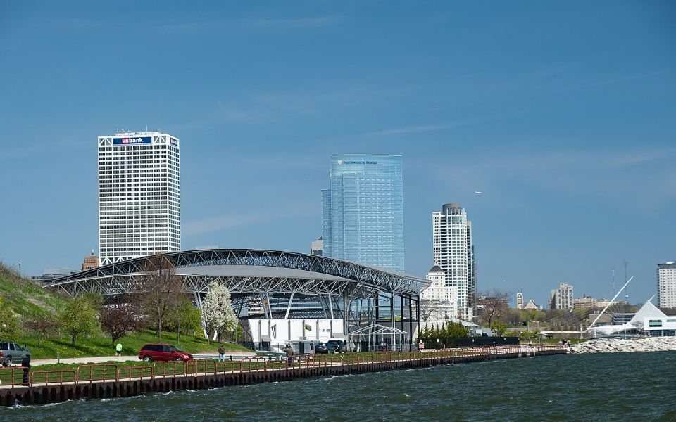
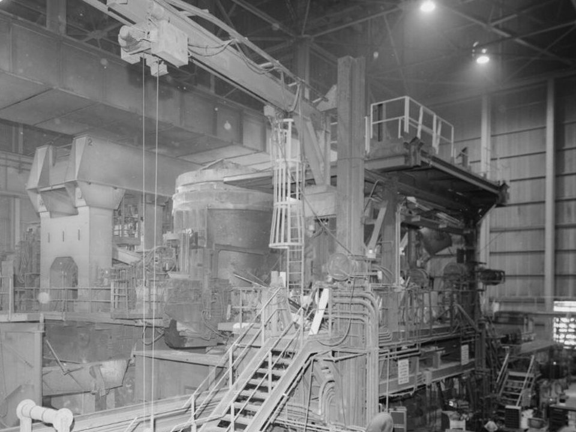
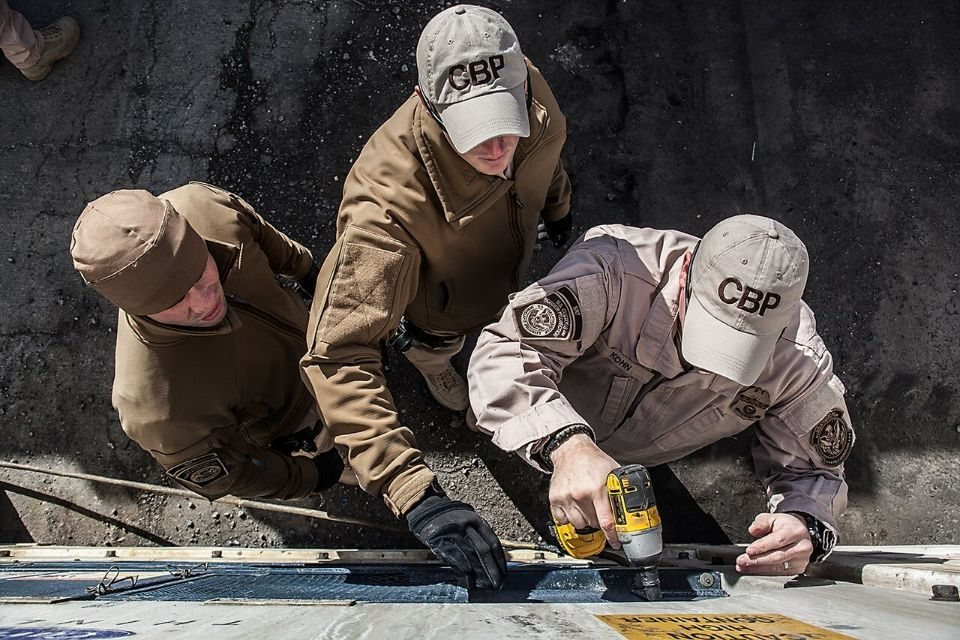

TRADE & POLICY · GFSEC · 2026.10
密爾瓦基框架：28 個經濟體聯手對付鋼鐵過剩，會議落幕、執法才開始
鋼鐵潮流工作室 · 發布 2026.10.10

本期重點
2026 年 9 月 30 日，全球鋼鐵過剩產能論壇（GFSEC）在美國威斯康辛州密爾瓦基召開部長級會議，由美國貿易代表 Jamieson Greer 主持，28 個成員通過《聯合行動綜合框架》（Comprehensive Framework for Joint Action），又稱「密爾瓦基框架」（Milwaukee Framework）。會議已經落幕，但框架本身沒有統一生效日，要靠各成員把承諾轉成自己的海關與貿易救濟作為。接下來該看的不是會議新聞，而是各國主動發起了多少反傾銷案、海關查了多少轉運貨。
- 是「通過」，不是條約：框架由各成員依本國法律、國情與國際承諾自行落實，執行成效在下一次部長會議檢討。
- 工具變硬：主動發起反傾銷與反補貼調查、監控供應鏈、稽查轉運與規避、共享資料辨識可疑貿易流向。
- 缺口還在擴大：全球過剩產能預估從 2024 年 6.01 億噸增至 2028 年 7.45 億噸；2026 到 2028 年新增產能約為新增需求的四倍。
- 矛頭指向非市場經濟：框架沒有點名，但部長聲明引用的補貼與出口數據都指向中國；中國不是 GFSEC 成員。
- 台灣不在桌上：台灣不是成員，出口要面對更嚴的原產地追查，內銷則可能承接被成員市場擋下的低價鋼材。
關鍵數字
會議落幕：通過了什麼
這次部長會議與 G20 貿易部長會議同期在密爾瓦基舉行，產出兩份文件：一份部長聲明，以及一份《聯合行動綜合框架》。GFSEC 的 28 個成員包括美國、日本、韓國、歐盟及其多個會員國、英國、加拿大、澳洲、墨西哥、巴西、土耳其等主要鋼鐵生產與消費國。
依各家外電報導整理，框架的內容可以歸成四類：
- 削減補貼：減少或取消扭曲市場的補貼，並處理這些補貼對市場導向經濟體生產者造成的傷害。
- 強化貿易執法：加強貿易救濟工具，包括由政府主動發起反傾銷與反補貼調查，必要時對產能過剩的國家使用關稅等措施。
- 追查流向：監控供應鏈、稽查轉運、打擊規避，並透過資料共享合作辨識可疑的貿易模式。
- 處理根源：GFSEC 與其協調單位受命蒐集、交換非成員國的非市場政策資訊，研議對策。
值得釐清的是，框架是各成員「同意」的共同行動方針，不是需要各國簽署批准的條約，也沒有統一的上路日期。Greer 在會後聲明表示，期待與各成員一起「執行」框架，並希望更多國家採用。換句話說，框架定了方向和工具箱，真正的力道取決於各國海關和貿易主管機關接下來的動作。
為什麼現在：缺口仍在擴大
部長聲明引用的數據說明了急迫性。全球過剩產能 2028 年預估達 7.45 億噸，是十年來最高；同一期間鋼鐵需求只會增加 3,400 萬噸，煉鋼產能卻可能再增加 1.39 億噸。2024 年全球鋼鐵業的 EBITDA 仍不到營收的一成，部長們認為這個獲利水準不足以支撐創新、資源效率與最佳可行技術的投資。
聲明也點出了補貼與出口的規模：依 OECD 數據，中國典型鋼廠取得的補貼、租稅優惠與低利融資，相對資產規模約為其他地區鋼廠的 15 倍，補貼率自 2019 年以來幾乎翻倍；中國 2025 年鋼材出口達創紀錄的 1.31 億噸，比 2020 年多出 153%。
為什麼要追轉運：反傾銷擋不住繞道
框架把重點放在轉運與規避，是因為單一國家的貿易救濟已經被證明會被繞過。部長聲明統計，GFSEC 成員 2016 年以來對中國鋼品發起 68 件反傾銷與反補貼措施，其中有 28 件出現同樣的模式：中國對 GFSEC 成員的相關出口大減，對非成員國的出口卻增加，接著這些非成員國對 GFSEC 成員的同類產品出口也跟著上升。
從冶金角度看，繞道的手法通常是在第三國做後段加工，例如把熱軋鋼捲冷軋、鍍鋅或塗裝，或把鋼胚軋成型鋼，讓產品可能依「實質轉型」規則取得加工國的原產地。但鋼材的化學成分在熔煉時就已決定，後續的軋延與熱處理只改變形狀、尺寸與組織，不會改變它在哪裡煉成。所以追查「在哪裡熔煉、在哪裡第一次鑄造」，比追查最後一道加工地更能看出鋼材的真正來源，這也是熔鑄地規則的出發點。

執法開始：熔鑄地與主動調查
部分市場的追查機制其實已經先行上路，方向和框架一致：
- 歐盟：依新鋼鐵法規 EU 2026/1384，進口商自 2026 年 10 月 1 日起必須提供鋼材熔鑄地的證明。8 月 31 日公布的執行細則（EU 2026/1963）以載明熔鑄國與爐號（heat number）的材質證明書為標準文件；2027 年 9 月底前的過渡期，發票、交貨單等文件若同時載明這兩項也可單獨使用。執委會將在 2028 年 6 月 30 日前評估是否改以熔鑄地作為配額分配的主要依據。這項規定是歐盟自己的立法，早於密爾瓦基框架，但正好提供了框架所需的追查資料。詳見本刊〈歐盟鋼鐵新制〉。
- 美國：232 鋼鐵關稅已提高到 50%；據法新社報導，美國目前也對包括中國、歐盟、日本、印度在內的 16 個貿易夥伴進行產能過剩相關調查。
- 碳申報的交集：歐盟 CBAM 同樣要求進口商取得鋼材生產設施的排放資料，與熔鑄地申報一起，讓進口鋼材的來源越來越難模糊處理。詳見〈CBAM 一次看懂〉。

本刊判斷，框架最可能先看到的效果是案件數增加：成員國政府主動立案，不必等業者提出申請，就能直接調查可疑的低價或轉運鋼材。
台灣的位置：不在桌上，但在名單裡
台灣不是 GFSEC 成員，這個框架對台灣鋼鐵業是兩面刃。
- 正面：熔鑄地清楚、在國內煉鋼的台灣鋼品，在成員市場更容易和來源不明的低價鋼材區隔。台灣自己也在使用貿易救濟，中鋼申請的中韓冷軋非方向性電磁鋼片反傾銷案，財政部 9 月 15 日認定傾銷成立，傾銷差率韓國 49.80% 至 59.35%、中國 26.44%；是否正式課稅，仍待經濟部的產業損害認定與關稅稅率審議委員會審議。
- 負面：台灣也可能成為被調查的一方。日本自 7 月 9 日起對台灣與中國產的鎳系不鏽鋼冷軋鋼板及鋼帶課徵暫時性反傾銷稅，期間到 11 月 8 日，稅率 3.6% 至 42.1%；燁聯、華新麗華在 6 月初判時即被點名，最終調查期限為 11 月 21 日。
- 貿易轉向的風險：依前述 68 件案例的經驗，被成員市場擋下的低價鋼材，常會轉往非成員市場。本刊判斷，台灣與東南亞同屬非成員，內銷市場面對的進口壓力可能增加，而不是減輕。
- 原料來源要說得清楚：使用進口鋼胚或熱軋原料加工外銷的業者，在熔鑄地與轉運追查下風險最高，必須備妥熔煉來源的證明。以歐盟為例，標準文件是載明熔鑄國與爐號的材質證明書（mill test certificate），過渡期在 2027 年 9 月底結束。
一貫作業鋼廠從高爐、轉爐到連鑄都在國內完成，熔鑄地清楚，原則上處於相對有利的位置；但下游加工業者的原料若來自中國或東南亞，就需要提早盤點供應鏈。
觀察重點
- 各成員由政府主動發起的鋼鐵反傾銷、反補貼與反規避調查案件數。
- 歐盟熔鑄地申報實際執行後的查核強度，以及 2028 年是否改以熔鑄地分配配額。
- 越南、印尼、馬來西亞等非成員國的鋼材出口是否因轉運稽查而下滑。
- 中國的回應。中國商務部國際貿易談判代表李成鋼對法新社表示，G20 成員尚未討論這項議題。
- 下一次 GFSEC 部長會議對各國執行成果的檢討。
延伸閱讀
資料來源
- Ambassador Greer Issues Statement Following the Ministerial Meeting of the GFSEC（USTR，2026-09-30）
- Global Forum on Steel Excess Capacity（GFSEC 官網）
- GFSEC agrees new joint action framework to tackle global steel excess capacity（SteelOrbis，2026-10-01）
- US leads global steel forum members to new agreement on excess capacity（MLex，2026-09-30）
- AISI commends US leadership in addressing global steel overcapacity（SMM）
- G20密爾瓦基會議美推鋼鐵減產框架鎖定中國產能（民視財經，2026-10-01）
- 全球鋼鐵產能過剩論壇：28個成員國同意持續合作（MoneyDJ）
- EU Steel Overcapacity Regulation 2026/1384（Crowell）
- EU Regulation 2026/1963 Sets Melt-And-Pour Evidence Rules For Steel Imports（Foresight）
- 財部拍板中韓電磁鋼品傾銷 追繳反傾銷稅最高達59%（鉅亨網，2026-09-15）
- 日本反傾銷重拳 2台廠被點名 最高稅率20.71％（工商時報，2026-06-20）
- 不鏽鋼涉傾銷！日本最快下月課反傾銷稅（自由財經，2026-06-19）
- 日本 7 月 9 日起對台中不鏽鋼冷軋課暫時性反傾銷稅（科技新報，2026-07-03）
內容僅供產業資訊參考，不構成投資建議。新聞版權屬原出處所有。